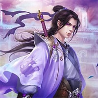

I Shall Seal the Heavens
Characters


Meng Hao (孟浩) was once a young scholar in Yunjie Country,
who had failed the imperial exams for the third time.
The God is a transcendent cultivator who hails from the Immortal God Continent.
Lord Fifth is a parrot and one of Meng Hao's closest companions along with the Meat Jelly.
Wang Mu is one of the Chosens in the Ninth Mountain.
"Lord Fifth is a gentleman. He finds the act of screwing anything with fur or feathers inhumane and disgusting. However,
because he is tied to Meng Hao, he has no choice but to carry out his requests, no matter how outrageous they might be."
Read Now! It's Time!!
Explore